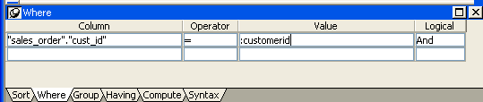
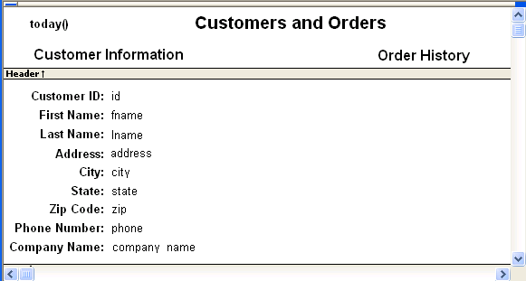
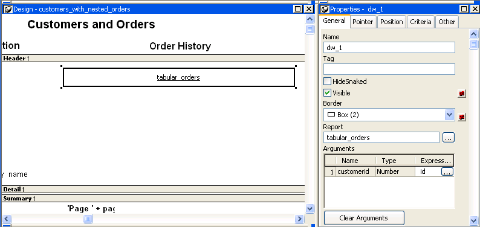
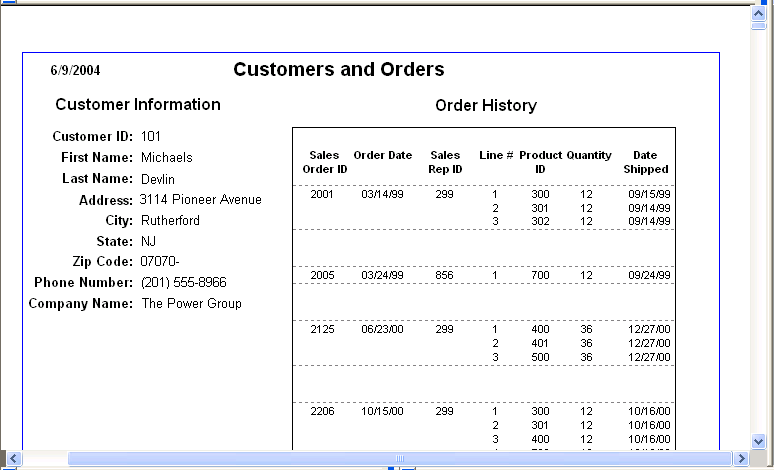

When you place a nested report in another report, the two reports can be independent of each other, or they can be related in the database sense by sharing some common data such as a customer number or a department number. If the reports are related, you need to do some extra things to both the base report and the related nested report.
Usually, when you place a report within a report rather than create a composite report, you want to relate the reports. Those instructions are first.
Typically, a related nested report provides the details for a master report. For example, a master report might provide information about customers. A related nested report placed in the master report could provide information about all the orders that belong to each customer.
 To place a related nested report in another report:
To place a related nested report in another report:
Create the nested report (DataWindow object) that you plan to place in the base report.
Define a retrieval argument for the nested report.
For example, suppose the nested report lists orders and you want to list orders for a particular customer. To define a retrieval argument, you would:
Specify the retrieval argument in a WHERE clause for the SELECT statement.
The WHERE clause in this example tells the DBMS to retrieve rows where the value in the column cust_id equals the value of the argument :customerid:

At this point, when you run the report to retrieve data, you are prompted to enter a value for :customerid. Later in these steps, you will specify that the base report supply the values for :customerid instead of prompting for values.
Open or create the report you want to have as the base report.
In the example, the base report is one that lists customers and has a place for the order history of each customer:

Select Insert>Control>Report from the menu bar.
In the Design view, click where you want to place the report.
The Select Report dialog box displays, listing defined reports (DataWindow objects) in the current target's library search path.
Select the report you want, and click OK.
A box representing the report displays in the Design view.
With the report still selected, select the General page of the Properties view.
The Arguments box lists arguments defined for the nested report and provides a way for you to specify how information from the base report will be used to supply the values of arguments to the nested report.

Supply the base report column or the expression that will supply the argument's value. To do this, click the button in the Expression column.
The Modify Expression dialog box displays. In this dialog box, you can easily select one of the columns or develop an expression. In the example, the column named id from the base report will supply the value for the argument :customerid in the nested report.
Select File>Save from the menu bar and assign a name to the report.
In the Preview view, you can see what your report looks like:

When you place an unrelated nested report in a base report, the entire nested report appears with each row of the base report.
 To place an unrelated nested report in another
report:
To place an unrelated nested report in another
report:
Create or open the report you want as the base report.
Select Insert>Control>Report from the menu bar.
In the Design view, click where you want to place the report.
The Select Report dialog box displays, listing defined reports (DataWindow objects) in the current target's library search path.
Select the report you want to nest in the base report, and click OK.
A box representing the nested report displays in the Design view.
Select File>Save from the menu bar and if the base report is newly created, assign a name to it.